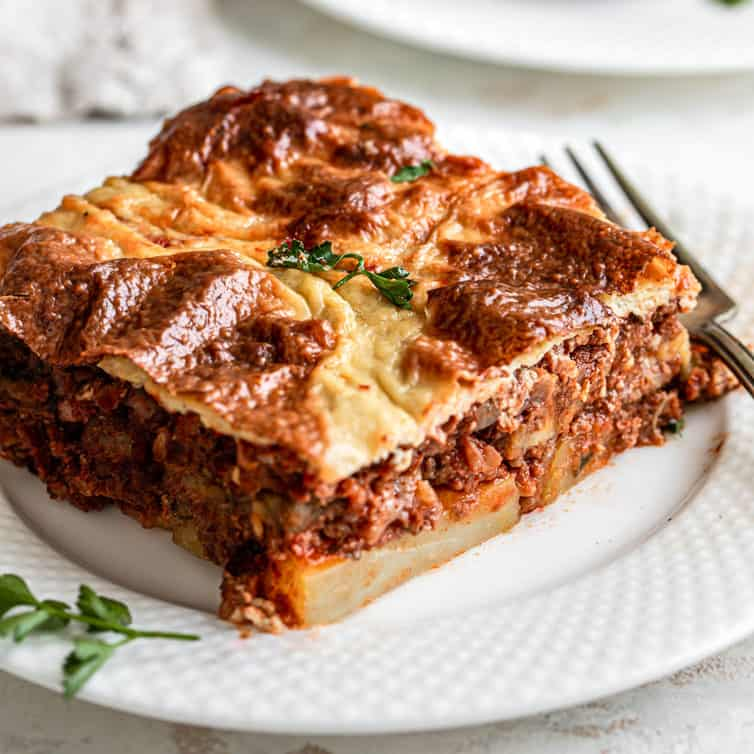

Ingredients:
- 2 large eggplants, sliced
- 1 pound ground lamb or beef
- 1 large onion, finely chopped
- 2 cloves garlic, minced
- 1 can (14 oz) crushed tomatoes
- 1/2 cup red wine
- 1 teaspoon dried oregano
- 1/2 teaspoon ground cinnamon
- Salt and pepper to taste
- 4 tablespoons butter
- 1/4 cup all-purpose flour
- 2 cups milk
- 1/4 teaspoon ground nutmeg
- 1 cup grated Parmesan cheese
- 1 cup breadcrumbs
Cooking Instructions:
- Preheat oven to 375°F (190°C).
- Place sliced eggplants on a baking sheet, brush with olive oil, and bake until golden brown (about 15-20 minutes).
- In a pan, brown ground lamb or beef over medium heat. Add chopped onion and garlic, cook until softened.
- Stir in crushed tomatoes, red wine, oregano, cinnamon, salt, and pepper. Simmer for 15-20 minutes until the sauce thickens.
- In a separate saucepan, melt butter over medium heat. Stir in flour to create a roux. Gradually whisk in milk until smooth. Add nutmeg and cook until thickened.
- Layer half of the eggplant slices in a baking dish. Top with the meat sauce, then the remaining eggplant slices.
- Pour the béchamel sauce over the eggplant and sprinkle with Parmesan cheese and breadcrumbs.
- Bake in the preheated oven for 45-50 minutes or until the top is golden brown.
- Allow to cool for a few minutes before serving. Slice and enjoy your Moussaka!